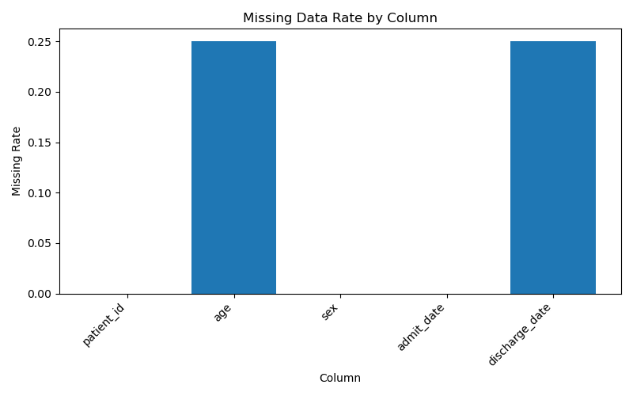
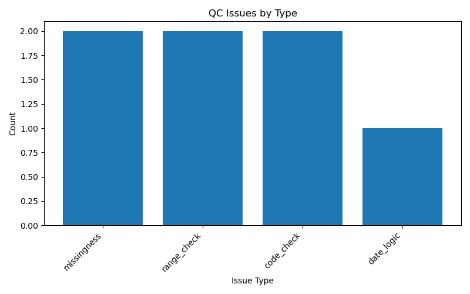

Rows: 4
Columns: 5
Total Issues: 7
Severity Counts: {'warning': 6, 'error': 1}
Issue Type Counts: {'missingness': 2, 'range_check': 2, 'code_check': 2, 'date_logic': 1}


| row | check_type | severity | message | value |
|---|---|---|---|---|
| NaN | missingness | warning | age has 25.0% missing values | 0.25 |
| 1.0 | range_check | warning | age=-3.0 is outside allowed range [0, 120] | -3.0 |
| 2.0 | range_check | warning | age=250.0 is outside allowed range [0, 120] | 250.0 |
| row | check_type | severity | message | value |
|---|---|---|---|---|
| NaN | missingness | warning | discharge_date has 25.0% missing values | 0.25 |
| 1.0 | date_logic | error | discharge_date is earlier than admit_date | 2024-01-08 |
| row | check_type | severity | message | value |
|---|---|---|---|---|
| 2.0 | code_check | warning | unexpected category value: X | X |
| 3.0 | code_check | warning | unexpected category value: female | female |